Introduction
SharePoint 2013 Client Side Rendering (CSR) is used for defining a custom rendering in list views and list forms. That also apply to Office 365. You can see a good article about how CSR works.
Note that JSLink and CSR are different things:
- CSR: is a JavaScript framework used in SharePoint 2013 as a technique for rendering data (replacing XSLT).
- JSLink: is a way to attach a JavaScript file to a SharePoint Object. (JSLink attached to SPView could implement CSR or not).
This post / article provides a detailed explanation about how works CSR internally in terms of overriding current templates and register out custom ones.
CSR and clienttemplates.js
In SharePoint 2013 there are a lot of JavaScript files intended to improve the User Experience, for example, in the picture we can see some of them in a normal page load. We remarks clienttemplates.js as a Client Side Rendering framework core file, which is a SharePoint 2013 / SharePoint Online asset intended to implement all JavaScript logic of CSR.
By default in SharePoint 2013 and Office 365 (Jan 2015), CSR core file is always loaded as it is shown in the picture:
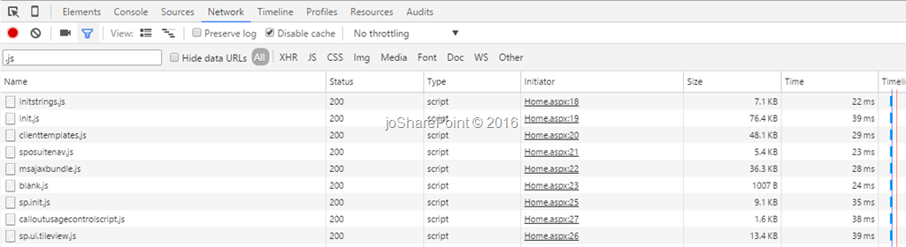
For instance, if we use OOTB Team Site template in Office 365, we could se how clienttemplates.js is loaded as a CSR core. But, what is also interesting is sp.ui.tileview.js file, which uses RegisterTemplateOverrides function to define special presentation for a view of Promoted Links List.
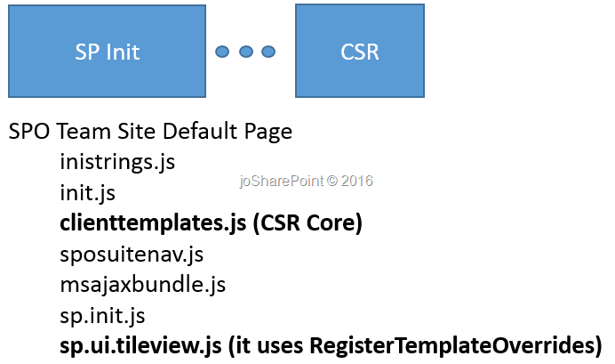
Inside clienttemplates.js
As we are very curious, we should like to know what is happening inside clienttemplates.js. To be honest, there is a lot of stuff to investigate. We can see the first lines here:
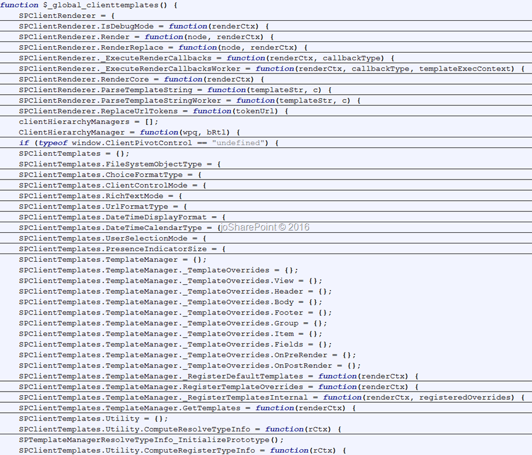
Let’s do some review over the most important functions and “classes”:
$_global_clienttemplates: wrapper that contains all objects and functions needed for CSR. It is called to be executed at the end of clienttemplates.js file.SPClientRenderer: JavaScript “class” intended to define all base or core functions used in the rendering framework. Let’s see few Important functions:SPClientRenderer.ReplaceUrlTokens(tokenUrl): replace typical tokes like that ~sitecollection with the right urls.SPClientRenderer.Render(node, renderCtx): Render core function that includes OnPreRender, RenderCore and OnPostRender. 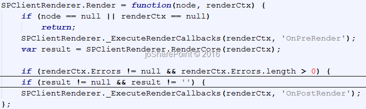SPClientRenderer.RenderCore(renderCtx): For every different render scope (View, Header, Body, Footer, Groups, Items and Fields), this function defines a different template. The advantage of this is we could override only one render scope if we need to implement custom solutions using CSR. The functionResolveTemplatewill choose the right template to implement: OOTB or Custom one. We will see later how to override custom templates, but this code states how SharePoint internally will manage them. 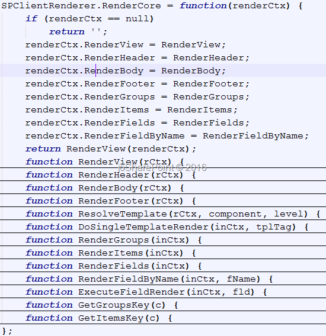SPClientTemplates: In the same way that SPClientRenderer all Render core functions, this “class” defines all the variables and functions needed to implement the Template framework that we will be able to override with our custom applications. Let’s see few Important methods and functions:SPClientTemplates.TemplateManager: keep theTemplateOverridesfunctions depending onViewStyle,ListTemplateTypeandBaseViewID. And also providesSPClientTemplates.TemplateManager.RegisterTemplateOverridespublic function that allows CSR customizations. We will see later on this post how it works.
Overriding CSR Templates
Now, we are happy to investigate deeply clienttemplates functions, let’s analyze SPClientTemplates.TemplateManager.RegisterTemplateOverrides in detail:
1
2
3
4
5
6
7SPClientTemplates.TemplateManager.RegisterTemplateOverrides = function (renderCtx) {
if (!renderCtx || !renderCtx.Templates && !renderCtx.OnPreRender && !renderCtx.OnPostRender)
return;
var tempStruct = SPClientTemplates.TemplateManager._TemplateOverrides;
SPClientTemplates.TemplateManager._RegisterTemplatesInternal(renderCtx, tempStruct);
};
First of all, the parameter renderCtx is a RenderContext object. That is a dynamic object available at render time and includes some reserved properties.
RenderContext object
RenderObject is passed as a parameter in almost all functions included in clienttemplates.js. It is a dynamic object composed of lot of dynamic properties, but the most important ones are: BaseViewId, ListTemplateType, OnPreRender, OnPostRender and Templates.
1 | var renderContext = { |
Once we know how is build the parameter object, let’s debug RegisterTemplateOverride function by using JS Debugger (F12).
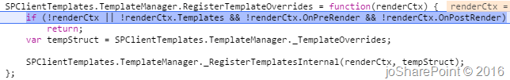
If there isn’t renderContext neither Templates, OnPreRender or OnPostRender customizations the function return nothing. So, do nothing.
After that is called an internal function called SPClientTemplates.TemplateManager._TemplateOverrides that gets current Template overrides that were previously done. You can see how Templates object returned by this function is organized following this structure:
Template Scope (Body, Fields, Footer, …) ViewStyle (default in this case) ListTemplateType (109 in this case) BaseViewID (2 in this case) Function
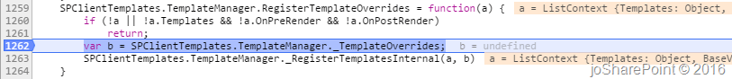
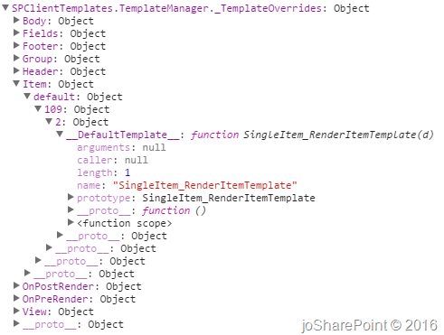
After that, is called _RegisterTemplatesInternal function that does a merge between current applied Templates and our custom template.
This is the function:
1
2
3
4
5
6
7
8
9
10
11
12
13
14
15
16
17
18
19
20
21
22
23
24
25
26
27
28
29
30
31
32
33
34
35
36
37
38
39
40
41
42
43
44
45
46
47
48
49
50
51
52
53
54
55
56
57
58
59
60
61
62
63
64
65
66
67
68
69
70
71
72
73
74
75
76
77
78
79
80
81
82
83
84
85
86
87
88
89
90
91
92
93
94
95
96
97
98
99
100
101
102
103
104
105
106
107
108
109
110
111
112
113
114
115
116
117
118
119SPClientTemplates.TemplateManager._RegisterTemplatesInternal = function(renderCtx, registeredOverrides) {
if (!renderCtx || !registeredOverrides || !renderCtx.Templates && !renderCtx.OnPreRender && !renderCtx.OnPostRender)
return;
var tmps = renderCtx.Templates != null ? renderCtx.Templates : {};
var typeInfo = SPClientTemplates.Utility.ComputeRegisterTypeInfo(renderCtx);
if (typeof renderCtx.OnPreRender != "undefined")
tmps['OnPreRender'] = renderCtx.OnPreRender;
if (typeof renderCtx.OnPostRender != "undefined")
tmps['OnPostRender'] = renderCtx.OnPostRender;
for (var tmplName in tmps) {
switch (tmplName) {
case 'Group':
case 'Item':
if (typeof tmps[tmplName] == "function" || typeof tmps[tmplName] == "string")
tmps[tmplName] = {
"__DefaultTemplate__": tmps[tmplName]
};
case 'View':
case 'Header':
case 'Body':
case 'Footer':
case 'Fields':
case 'OnPreRender':
case 'OnPostRender':
var bCallbackTag = tmplName == 'OnPreRender' || tmplName == 'OnPostRender';
var bSingleTpl = tmplName == 'View' || tmplName == 'Header' || tmplName == 'Body' || tmplName == 'Footer';
var bSetTpl = tmplName == 'Item' || tmplName == 'Group' || tmplName == 'Fields';
var viewStyleTpls, listTpls;
var tpls = registeredOverrides[tmplName];
if (typeInfo.defaultViewStyle) {
if (!tpls['default'])
tpls['default'] = {};
viewStyleTpls = tpls['default'];
HandleListTemplates();
}
else {
for (var vsIdx = 0; vsIdx < typeInfo.viewStyle.length; vsIdx++) {
var viewStyleKey = typeInfo.viewStyle[vsIdx];
if (!tpls[viewStyleKey])
tpls[viewStyleKey] = {};
viewStyleTpls = tpls[viewStyleKey];
HandleListTemplates();
}
}
}
}
function HandleListTemplates() {
if (typeInfo.allLists) {
if (!viewStyleTpls['all'])
viewStyleTpls['all'] = {};
listTpls = viewStyleTpls['all'];
if (bSingleTpl || bSetTpl)
HandleTemplateRegistration();
else
HandleCallbackRegistration();
}
else {
for (var ltIdx = 0; ltIdx < typeInfo.ltype.length; ltIdx++) {
var ltypeKey = typeInfo.ltype[ltIdx];
if (!viewStyleTpls[ltypeKey])
viewStyleTpls[ltypeKey] = {};
listTpls = viewStyleTpls[ltypeKey];
}
if (bSingleTpl || bSetTpl)
HandleTemplateRegistration();
else
HandleCallbackRegistration();
}
}
function HandleTemplateRegistration() {
var viewSet = typeInfo.allViews ? listTpls['all'] : listTpls[typeInfo.viewId];
var newTpls = tmps[tmplName];
if (bSingleTpl) {
if (typeof newTpls == "function" || typeof newTpls == "string")
viewSet = newTpls;
}
else {
if (!viewSet)
viewSet = {};
for (var t in newTpls)
viewSet[t] = newTpls[t];
}
if (typeInfo.allViews)
listTpls['all'] = viewSet;
else
listTpls[typeInfo.viewId] = viewSet;
}
function HandleCallbackRegistration() {
var newCallbacks = tmps[tmplName];
if (!newCallbacks)
return;
var viewCallbacks = typeInfo.allViews ? listTpls['all'] : listTpls[typeInfo.viewId];
if (!viewCallbacks)
viewCallbacks = [];
if (typeof newCallbacks == "function")
viewCallbacks.push(newCallbacks);
else {
var newLen = newCallbacks.length;
if (typeof newLen == "number") {
for (var n = 0; n < Number(newLen); n++) {
if (typeof newCallbacks[n] == "function")
viewCallbacks.push(newCallbacks[n]);
}
}
}
if (typeInfo.allViews)
listTpls['all'] = viewCallbacks;
else
listTpls[typeInfo.viewId] = viewCallbacks;
}
};
Imagine the scenario where we assign custom template to ListTemplateType = 100, with a custom Item function.
The parameters would be:
renderCtx:
{kind=link}
registeredOverrides:
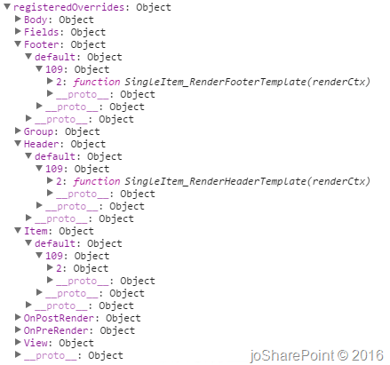
And, after applying _RegisterTemplateInternal that would be the registeredOverrides result:
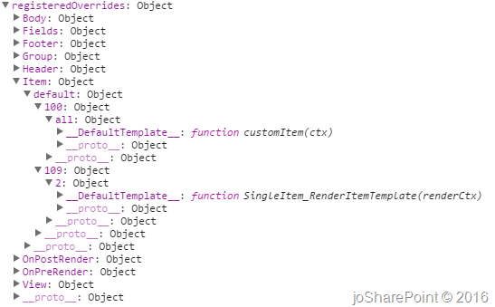
Note that Item template have now two objects behind the default ViewStyle, one for 109 and other for 100 List Type.
SharePoint OOTB Template Overrides
CSR is a framework, but is not only used by developers to create custom view, it is also used for SharePoint itself in order to create custom views for different list types, for example if we take a look into SharePoint OOTB JS files we can see how the function RegisterTemplateOverrides is used in 20 files:
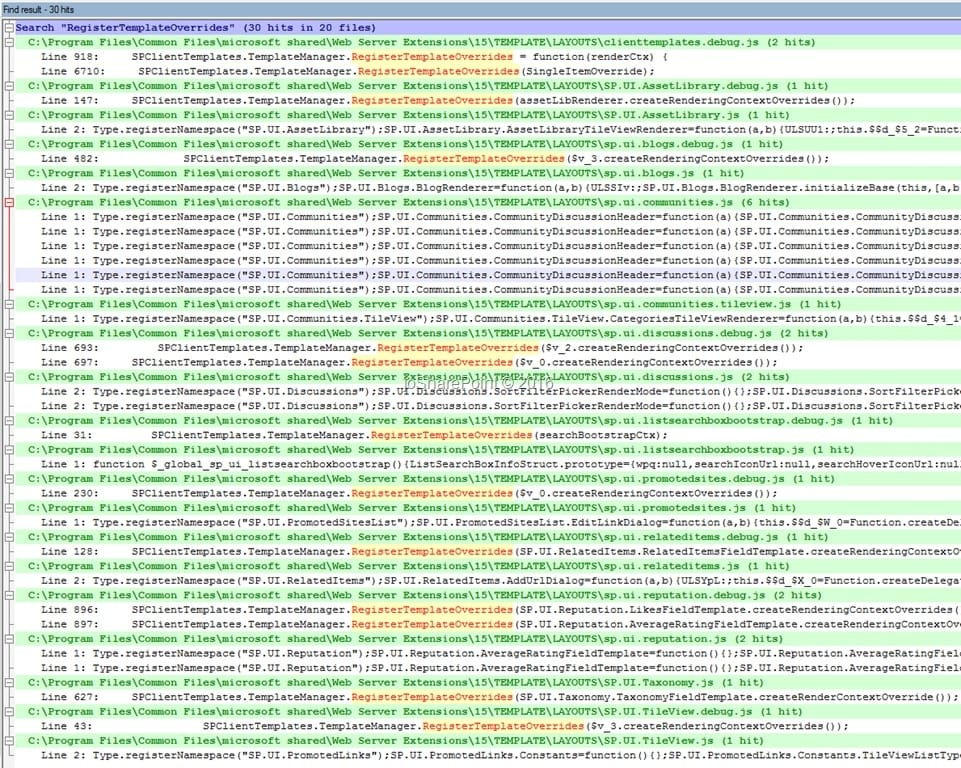
Conclusion
I really like this kind of investigations because helps me to understand completely a product or new feature. After this investigation I’d like to remark:
- Client Side Rendering / CSR is a rendering framework and JSLink is a way to attach a JavaScript file to a SharePoint Object.
- We could use CSR without using JSLink, just calling RegisterTemplateOverrides function from a Script Editor for instance.
- With CSR is possible to implement different customizations to the same view and list in different SharePoint pages.
- We can NOT use CSR to apply two different customizations for the same view and list in the same SharePoint page. For example, we have custom list (100) and we want apply different presentations for the allItems view in the same page. That could not be possible because it is only one function associate with one ListTemplateType and BaseViewID. There are different ways to workarround this one, I will post about that. - Keep in mind that when you use multiple instances of a list view Web Part on the same page and apply CSR to one of the instances, the layout of all other list view Web Parts changes also, because internally SharePoint uses common rendering logic. Source: https://msdn.microsoft.com/en-us/magazine/dn745867.aspx.
- I have never tried, but seems to be possible overrides different ViewStyles inside the same ListTemaplateType and BaseViewID. That could provide us flexibility in some scenarios.
Of course, this is my interpretation of the code, please if you have different one, don’t hesitate on write a comment!